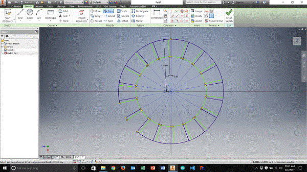

Week 2: Computer-Aided Design
Model (draw, render, animate, simulate, ...) a possible final project, and post it on your class page with original 2D and 3D files.
Learning Outcomes:
- Evaluate and select 2D and 3D software
- Demonstrate and describe processes used in modeling with 2D and 3D software
More Concrete Evidence:
- Modeled experimental objects/part of a possible project in 2D and 3D software
- Shown how you did it with words/images/screenshots
- Included your original design files
Time to get better at Computer-Aided Design
Until this week, I have only done a little CAD, but it is clearly a very powerful tool to get ideas from the mind to reality. Starting on Thursday I began to do some 3D design in Autodesk Inventor. Inventor is 3D CAD software that I am most familiar with, but that is not saying much. Also, Inventor is what was previously installed on the laptop that I am using from my school district. I developed two designs over the next two days. Simple enough parts, but with increasing complexity.
The core steps to creating a 3-D model in software such as Autodesk Inventor are really quite simple:
- You make a 2D drawing that will outline a shape of your object, much like designing the opening for an icing piping tip. 
- Extrude this 2D shape whatever distance you like to develop your 3D shape. This is conceptually much like decorating a cake by piping icing or pushing toothpaste out of the tube.
- Start designing further complexity on your design by sketching on new surfaces.
- Extrude additions or subtractions to bring your ideas to life.
- It is possible to make extrusions that are more complex by rotation or sweep along another defined path.
Despite understanding this core model of (at least some) CAD software, I know that I need to improve my own CAD skills. Towards this goal, I spent some time trying to work with curved and rounded faces, which can add a layer of complexity. This meant that I spent quite a large amount of time trying iterative versions of the ‘queue’ and ‘hopper tray’ parts in Inventor. I quickly learned that working with rounded objects is much more challenging than purely linear and angular parts. I had to figure out how to place work faces and work out the details of extruding as a sweep along a secondary drawing (see step 5 above). I am intruiged by functional representation of 3D shapes for the purposes of CAD. However, on the surface, it seems as though learning how to represent the 3D shapes I would need for my final project with mathematical formulae would take a semester by itself.
Trying other 3D CAD software packages
For the sake of expanding my horizons with totally new software, I downloaded the Solidworks installation file, with an intent to install and try the software. However, I never received an email with a product key as was to be expected for Fab Academy students. The terms on the Solidworks website seemed to read that I would have a 60-day trial without the authorization code, so I opted to pass on the installation until a later time. Perhaps the installation code would come in and I could have a more permanent version of Solidworks. In the meantime, I do not want a trial license running out midway through Fab Academy, and be forced to change software as a result.
In response to the delay from Solidworks, I turned to the next software built by the same person: Onshape.
Onshape is CAD software, which is entirely web-based. This utterly amazes me.
I am astounded that this level of sophistication is even possible through a browser.
I worked through the mechanics of developing a part and assembly in Onshape, and found it to be at least as easy to use as Autodesk Inventor.
I actually enjoyed the particular selection of controls within Onshape better than Inventor’s equivalent controls.
Once I had made a part, I experimented with making a technical drawing for the first time.
After a quick tutorial from the Onshape examples, I was able to make a fully detailed set of projection drawings, with dimensions.
Next was a simple assembly in Onshape. For this, I quickly made a second part. A tray to fit into the base.
This part is not overly complex, but I was able to experiment with an assembly of pieces, and giving those parts a simple constrained ‘slider’ relationship.
Assigning a slider relationship was a simple point and click. Constraining the slider took a little more work: I had to determine how the motion was quantified and how it was offset.
Once I figured out the relationships of this motion, I was able to go back and edit my tray to be a little taller.
Conveniently, making a change to a model, such as this, is immediately reflected within the assembly.
My understanding all of these pieces of CAD seemed to be starting to fit together. I made a quick screencast of working with this assembly, visible below:
2D design
On Monday, I reviewed the assignment objectives for the week. It appeared that I had met many of them.
Now I needed to work within the 2D world. Developing raster and vector images is a part of this week’s goals, but it turned out I had done it the week before.
When developing my website, I came across the idea of a ‘favicon.’ I have always enjoyed the little logos on browser tabs.
Perhaps unreasonably so. Those small identifiers that can add or detract personality and professionalism from a website simply keep me entranced.
I appreciate a clear logo, with smooth edges and transparency to feel like a natural part of the browser. I knew I wanted to make a favicon of my own.
First I developed a crude mountain themed icon with MS paint. The classic among raster editors. I developed a blue swirl shape, with a black ‘C’ overlaid, all on a white background.
I wanted it to be clear, but struggled to make it happen in Paint.
I dealt with the product and integrated it into an early version of my website to see that I could do this.
Discontent with this favicon, I downloaded Inkscape. I had used this software many years ago, perhaps back when I was in college at BGSU.
Through this software I was able to develop the favicon that is on my website now.
Using vectors, I was able to develop a much cleaner looking logo, include transparency, and make it much more scalable.
It turned out that I had done some 2D CAD work before I even got to this week’s assignment.
Rendering
Another one of the learning targets for this week is rendering. Up until Monday, I had not rendered a thing within any of the CAD software I had used. Long ago, again while I was at BGSU, I had used Blender to make some very simple cad renderings. Essentially a few spheres and cylinders, for bizarre math classes. :: haunting memories :: my recollections of Blender were simply that it was awkward to use. I am sure that it is great for design and animation, but that is not what I envision using CAD for personally. I downloaded and installed Blender, just to make a current assessment. Its interface still baffles me; even these many years later. I also looked at the Unreal engine, but this also seemed like a behemoth to undertake. My novice skill level seemed to get me again, so I returned to Inventor. I had made a few unconnected parts in Inventor at the end of last week. These would be the start of my rendering work. One of the existing models became the springboard for several more, and I made simple corresponding parts. I wanted to build out a hopper assembly, and render at least an image and a video of that work. After watching a few tutorials on how to work with assemblies in Inventor, I was up and running. I have to say, Onshape was more straightforward for building assemblies - perhaps Onshape owes this to its ties with Solidworks. However, Onshape does not seem to have a native rendering capability. This seems reasonable, given that it is a browser-based software. Browsers can do a lot, but not everything. I stumbled upon the image rendering settings within Inventor. Although a static image was complete, it was clear I needed guidance for developing a video rendering. I turned to YouTube. This video guide walked me through the process of building a video rendering within Inventor. Once the basic parameters of setting up a camera and selecting keyframes was completed, the reminder was quite straightforward. I would have liked to have a few of my parts fade out of the assembly, but the interface between my version of Inventor and the tutorial did not appear quite the same, and I needed sleep. I will develop my skill at making fancier renderings in the future. While I finish writing this section of my reflection, Inventor is rendering a 7.5-second video in the background. It has been over an hour, and it only appears to be 85% done. It is now clear to me that this is why I have such limited experience with renderings. They take such a very long time, and I often do not have a powerful enough computer at my disposal to make them more expeditious or a burning need for them.
That rendering that took over an hour ended up looking abysmal. I changed some settings and re-rendered the video overnight. The product was much better, but I don’t even want to know how long it took to finish on my feeble laptop.
Animations
Now that I had learned to render, a quick review of the learning goals guided me to animations. It took several tutorials, and well over an hour of suppressing constraints on my hopper assembly, but I got it. I was able to animate the agitator rotating in the hopper and render this output. I tried recording the animation directly with Inventor, but the video quality was so poor that it hardly made sense to keep the files (other than as failed examples). Therefore, I was back to rendering. Assigning an animation to move within a rendered video in Inventor is not conceptually hard, but it does take some detail-oriented configuration work to ensure that all of the right settings are checked. I am still not sure why my rendering does not show the fade that I set-up within it, but I guess you can’t master all of the CAD skills in a week… I still need to work on learnign how to run proper simulations within CAD software, but I can do some basics. I am able to check for any overlaps and outright broken geometry, but I will need to work more to develop my ability to run stress tests and other operations within any CAD software.